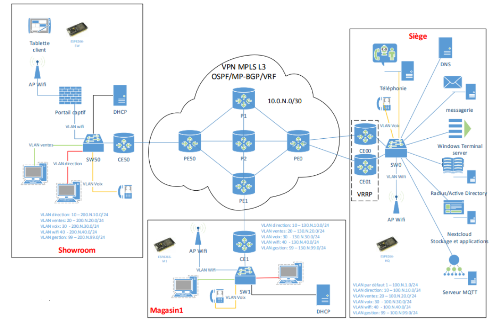

Systèmes
Administration Linux (Debian/Ubuntu) & Windows Server (Active Directory), Déploiement de services (DNS, DHCP), Virtualisation, Traitement de flux et bases de données (Node-RED, InfluxDB), Scripting Bash.
Etudiant en Ecole d'Ingenieur spécialité Cybersécurité, je suis passionné par les réseaux et la cybersécurité
Je suis a la recherche d'une alternance pour la rentrée 2026

Administration Linux (Debian/Ubuntu) & Windows Server (Active Directory), Déploiement de services (DNS, DHCP), Virtualisation, Traitement de flux et bases de données (Node-RED, InfluxDB), Scripting Bash.
Équipements Cisco, Routage dynamique (OSPF, MP-BGP, VRF) et commutation (VLAN, VTP), Sécurité des échanges (DNSSEC, VPN), Déploiement de Téléphonie IP (VoIP), Mise en place d'installations réseaux simples
Bases en sécurisation de datacenter avec des capteurs, Réaction en situation de crise (exercices de gestion)
Bash, Java, C++, Python, C, Langage Assembleur (x68)
Agile, Gestion de projet
Esprit d’équipe, Esprit d’analyse, Méthodique, Réactif